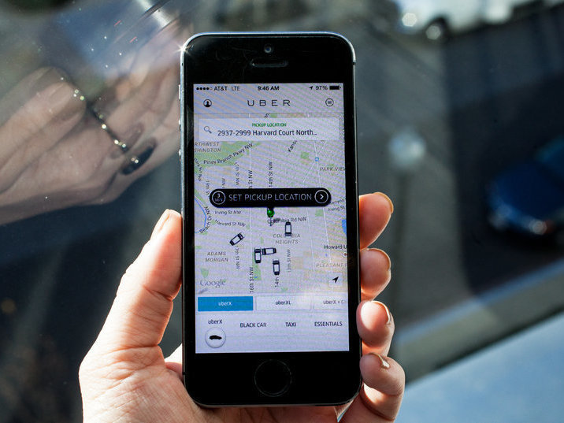

Disruptive Technologies in Media and Communications
When Western Union declined to purchase Alexander Graham Bell's telephone patents for $100,000, their highest-profit market was long-distance telegraphy. Telephones were only useful at that time for very local calls. Short-distance telegraphy barely existed as a market segment, which explains Western Union's decision to not enter the emerging telephone market. However, telephones quickly displaced telegraphs, as telephones offered much greater communication capacity than telegraphs. A few years later and now social media is one of the biggest disruptors to the way we communicate with others.
Along with social media, we see other methods of communication changing tremendously. Take the Uber Network as an example, this allows consumers with smartphones to submit a trip request, which the software program then automatically sends to the Uber driver nearest to the consumer, alerting the driver to the location of the customer.....how cool is that?
Disruptive innovations/technologies have altered communication significantly over the years, I've listed some of the outstanding ones below:
Uber
Mobile Internet
Social Media(Facebook, Twitter, Skype etc)
Instant Messaging and Video Messaging

Uber App - showing customer the proximity of Uber cabs to their location
Video Messaging - users having realtime conversation over video on their mobile devices